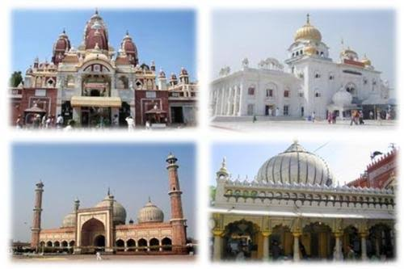
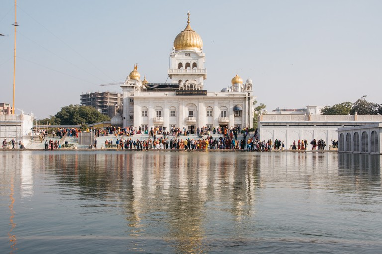
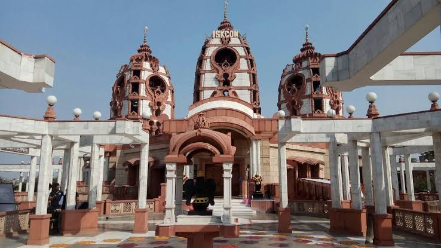
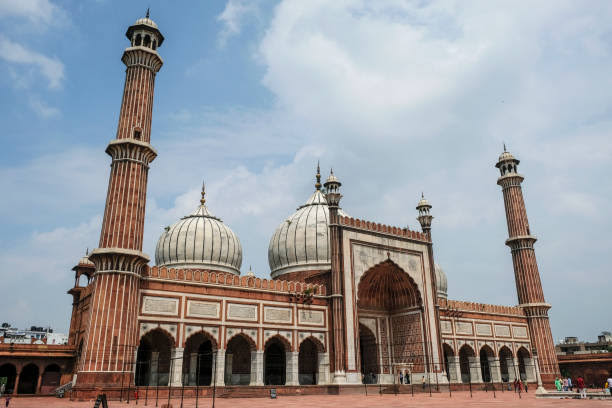

Delhi Tourism |
History | Geography | Food | Monuments | Markets | Education | Weather | Festivals | Pilgrims | ||
|---|---|---|---|---|---|---|---|---|---|---|---|
|  | |||||||||||
Pilgrims In DelhiFor most people Delhi evokes images of an overcrowded metropolitan city, of busy and noisy commercial areas. Much of Delhi’s urban space, being the second most populous city in India, has indeed an incessant flow of people and vehicles. However, visitors would be surprised to discover the stillness that hovers over some of the temples of the city. Sufi shrines, medieval mosques, Sikh gurdwaras and Hindu and Jain temples pervade the city. Here’s a list of 10 must-see Religious sites. Road Kalkaji Mandir, Delhi Delhi, the capital city of the country is also one of the oldest cities in the country. Ruled by several Kings and dynasties, this city has witnessed history being made over the centuries. At present, Delhi is known for being the political hub of the country and many major events take place here. However, another side of Delhi which makes this city famous is also because of its number of religious places. You will find religious places from all religions in this city, and most of the religious places here are years old. Some of the temples were built during the time of Mahabharata. In this piece of information, let us discuss the best pilgrimage places to visit in Delhi. | |||||||||||
|  |  |  | |||||||||
| Copyright all Right Reserved BY Arvinder Singh | |||||||||||